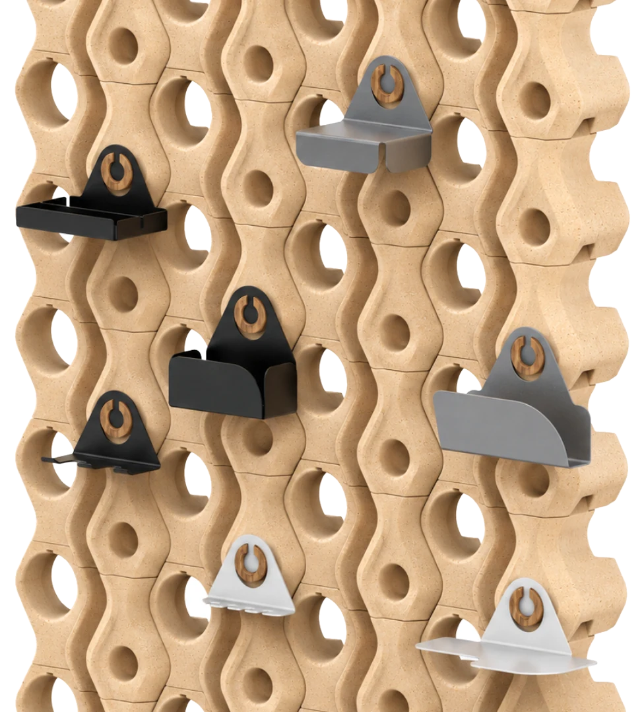
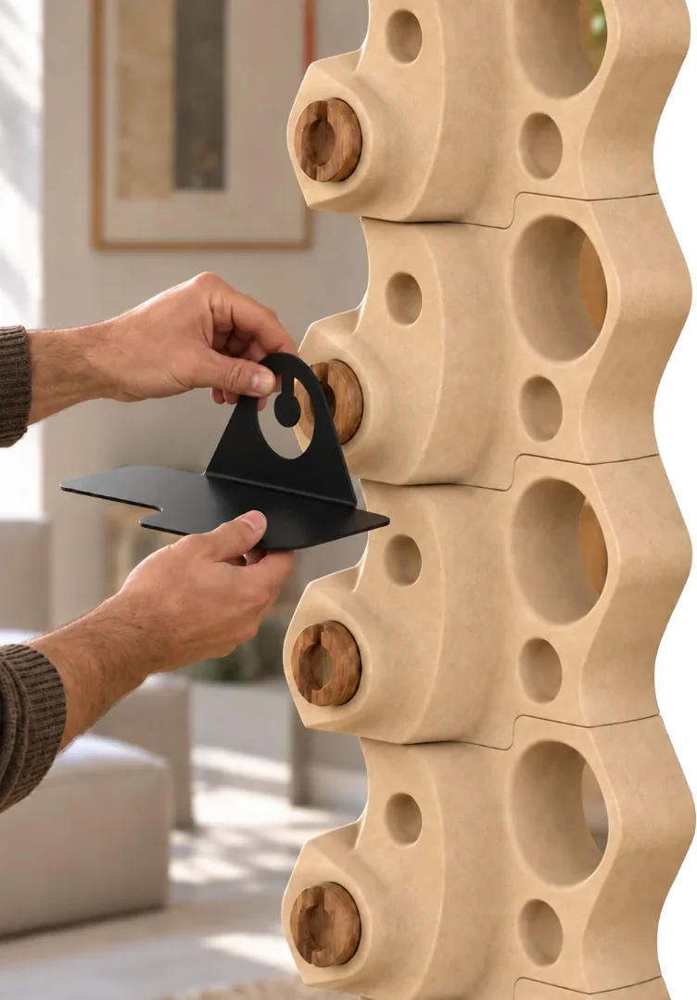
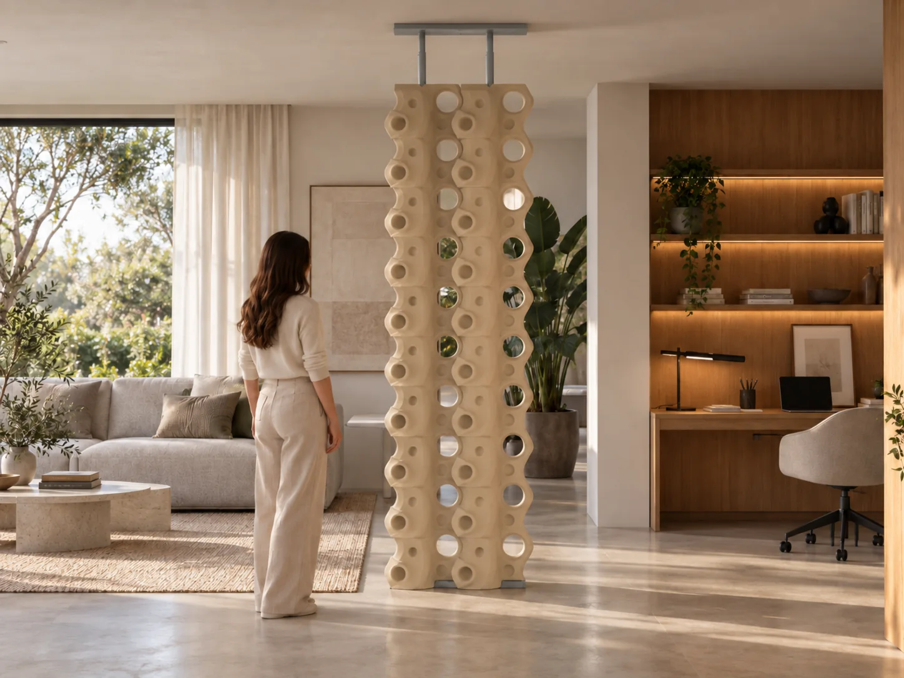
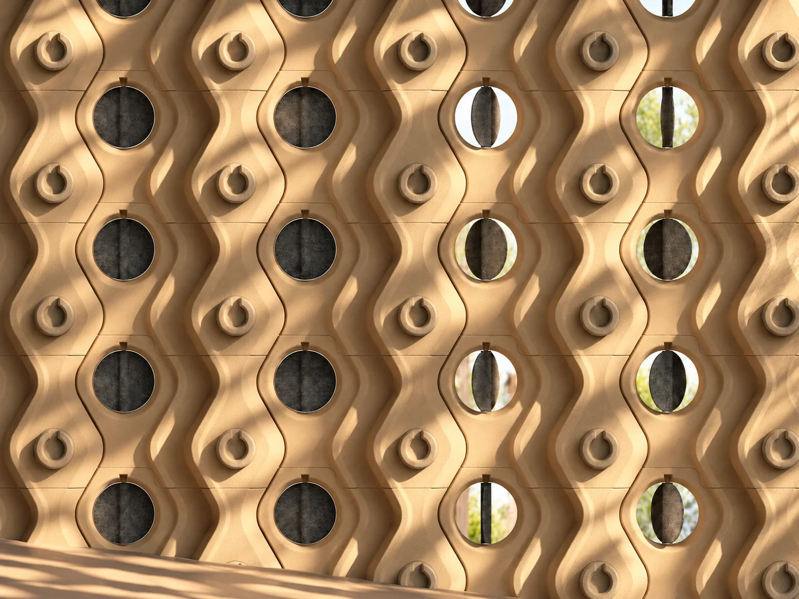
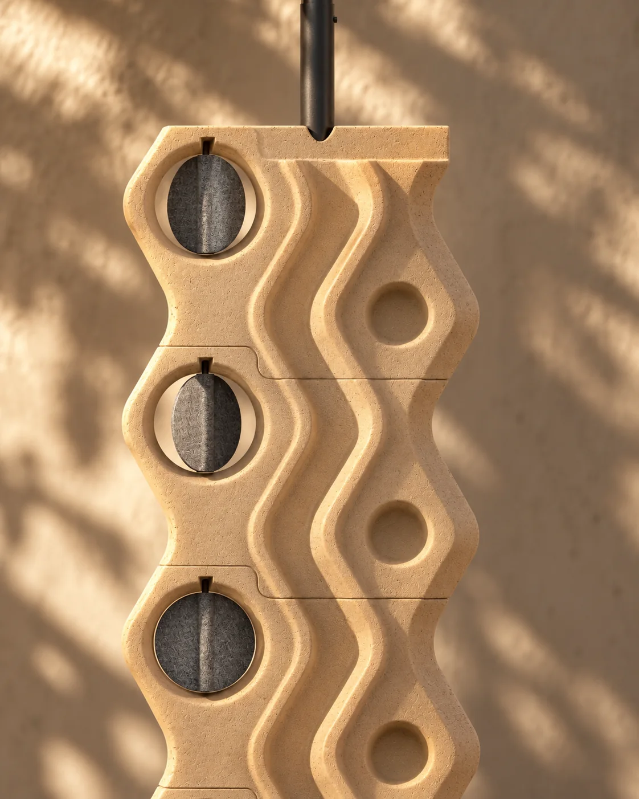
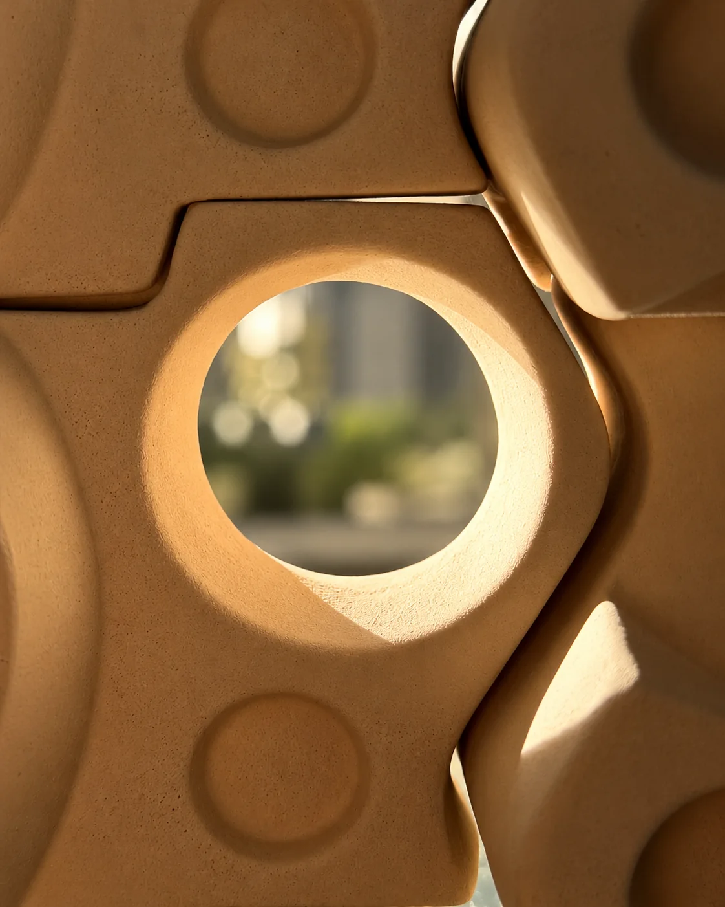
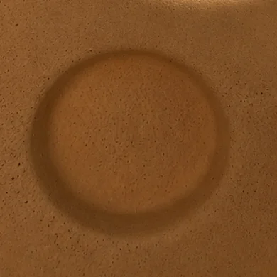

La colección.
Siete lecturas de una misma pieza. El sistema se comporta como un organismo sensible: respira, filtra, se abre, se protege. Cada transformación material equivale a un gesto humano.
La materia
viva.
El sistema se comporta como un organismo sensible: respira, filtra, se abre, se protege. Cada transformación material equivale a un gesto humano.
Así como el cuerpo se abre para recibir y se cierra para cuidar, el sistema se adapta para equilibrar convivencia y soledad.
Habitar, entonces, no es solo ocupar un espacio, sino una experiencia en la que se coexiste con los otros desde la materia viva del entorno.
Piezas cerámicas
Elementos principales del sistema, diseñados para generar división, textura y composición visual.
Accesorios
Complementos intercambiables que amplían las posibilidades de uso, soporte y personalización.
VER COMPLEMENTOS→Componentes de instalación
Guías de instalación, columnas estructurales y componente telescópico para montar el sistema sin obra.
Líneas

Cian pastel, un tono sereno inspirado en el agua en calma.
VER LÍNEA→
Negro mate, entre lo industrial y lo natural.
VER LÍNEA→
Verde amarillento, cálido y con carácter propio.
VER LÍNEA→
Pasta de gres sin esmaltar, el tono crudo y auténtico de la cerámica.
VER LÍNEA→
La misma pasta sin esmaltar, en su variante de cocción más oscura.
VER LÍNEA→
Blanco mate, luminoso y neutro.
VER LÍNEA→
Esmaltado marrón chocolate, con presencia de tierra.
VER LÍNEA→Componentes
funcionales.
Siete complementos funcionales.
El sistema incorpora siete complementos funcionales diseñados para ampliar las posibilidades de uso de HABITARE.
Fabricados en chapa de acero al carbono SAE 1010 con acabado galvanizado, permiten incorporar diferentes funciones al sistema y se ofrecen en tres opciones de acabado y color.
- Organizador documental
- Contenedor multiuso
- Luminaria
- Contenedor compartimentado
- Porta llaves / lentes
- Perchero
- Estante

1 2 3 4 5 6 7
Gris, blanco o negro.
Guías, componente telescópico y complementos se ofrecen en tres opciones de acabado y color.

Regulador
ambiental.
Controla la entrada de luz y aire según las necesidades de cada momento.
Un componente giratorio que vincula ambos lados de la pared y permite regular el ingreso de luz y el grado de privacidad entre ambientes. Sus paneles de fieltro ofrecen una solución flexible para modificar la apertura visual del sistema.
PANELES DE FIELTRO / 3 COLORES


